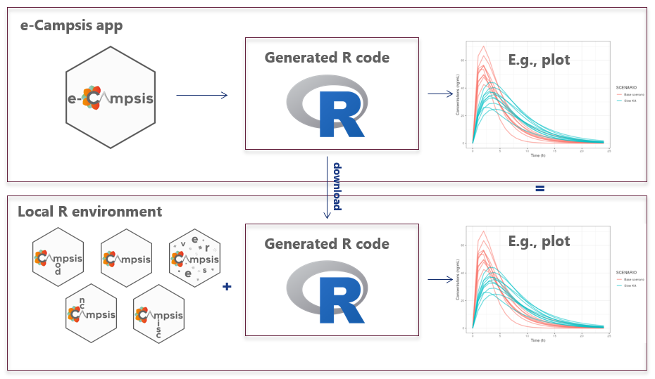
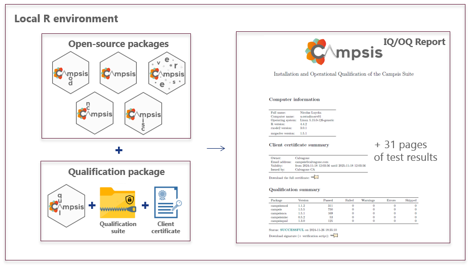
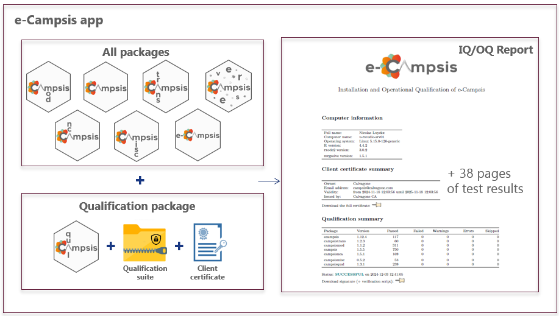
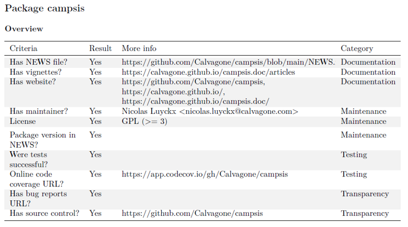
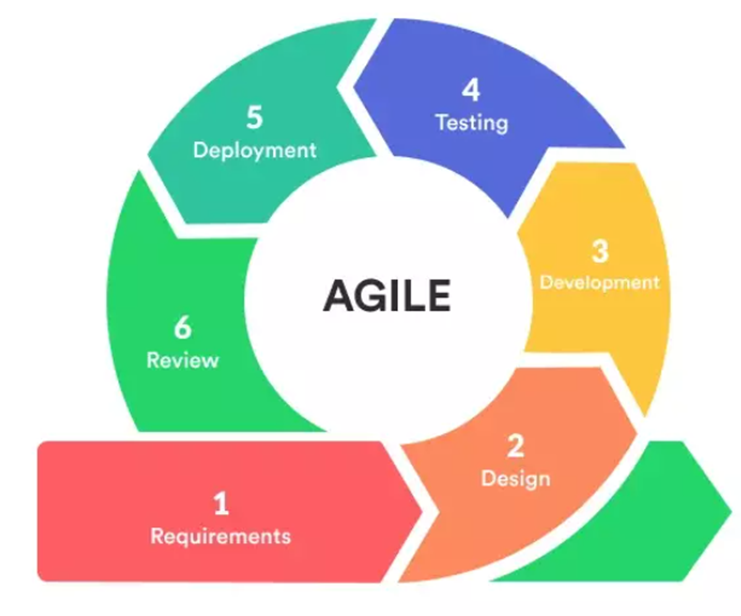

At Calvagone we are committed to developing high-quality software
that meets the rigorous standards of pharmaceutical research and
development. Our quality assurance process, applied to all packages in
the Campsis suite, is based on the following principles:
Fully reproducible workflow
All the simulations performed with e-Campsis are fully reproducible
thanks to the open-source suite of packages.
In e-Campsis, the users can download the generated R code and run it on
their own machine. The exact version of the packages and the
dependencies, used by e-Campsis, can be locally restored using the campsisverse
package, the installation manager for the Campsis suite. This allows the
users to reproduce the results obtained with e-Campsis.
Typical workflow with Campsis/e-Campsis:
- The user imports his/her model into e-Campsis
- The study design is created and the simulations are run
- Post-processing is performed (single replicate or multiple
replicates)
- The user downloads the generated R script and runs it on his/her
machine or server with his current installation of the Campsis
suite
- Alternatively: a sandbox environment is automatically created with
the exact same versions of the packages used by e-Campsis on the
web
- The user reproduces the results obtained with e-Campsis on his
computer with a fully reproducible R script that can be appended to a
M&S report
Of course, the user is free to edit the R script before execution to,
for example, customize plots or increase the number of replicates or
individuals.

Qualification of the Campsis suite
The Campsis suite can be installed easily with the campsisverse
package, yet in regulated environments it needs to be ensured and
documented that everything works as expected. We have developed a
qualification packages to ensure that the Campsis suite is installed and
operates properly on all platforms (local installation or server
installation). This process is based on the following steps:
- Installation: The Campsis suite is installed in
your R distribution (see the different options here).
- Qualification: The Campsis suite is qualified using
the
campsisqual
package and our qualification suite of models; this encompasses tests of
proper installation of all packages (i.e. installation qualification or
IQ) as well as specific tests of the functions of each package and
execution of a large number of PK/PD simulations with models from the
library and comparing the results to true expected values. This
procedure is called operational qualification (OQ). In total over 1500
tests are run and more than 100 models are executed.
- Reporting: A detailed IQ/OQ report is generated,
signed digitally and serves as the proof of the qualification.

This qualification process is part of a service offering by Calvagone and includes:
- The qualification suite of models
- The qualification report template
- The digital certificate and key
- Personalized support during the installation and qualification
process
- Online introductory training
- A package of consulting hours that can be used for advanced
training, implementation of models, or further personalized
support.
Contact us at campsis@calvagone.com if you are
interested in this service.
Qualification of e-Campsis
Similarly to the qualification of the Campsis suite, e-Campsis the
online graphical user interface is qualified at every release as
follows*:
- Installation: A
Docker image of
e-Campsis and the Campsis suite is made before every release
- Qualification: The image is qualified using the
campsisqual
package and our qualification suite of models (see above)
- Reporting: A report is output for the specific
version of e-Campsis. It is signed digitally and it serves as the proof
of the qualification.
- for hosting on our own server; on shinyapps.io the procedure differs
slightly.

Package quality assessment
Our report, besides showing the detailed results of the tests, also
includes a quality assessment of every Campsis package. This assessment
is based on the riskmetric
package suggested by the R Validation Hub consortium (https://www.pharmar.org/riskmetric/
to assess the quality of an R package.
- Has NEWS file?: This type of file is important to
keep the users informed about the changes in the package.
- Has vignettes?: Vignettes are important to show the
users how to use the package.
- Has website?: A website is important to provide
more information about the package and keep the users informed.
- Has maintainer?: The maintainer is important to
keep the package up-to-date.
- Has license?: A license is important to protect the
package and the users. Our Campsis suite is licensed under the GPL-3
license. This basically means that you can use the software for free,
you can modify it, and you can distribute it. However, if you distribute
the software, you must also distribute the source code.
- Package version in NEWS: Is the current version of
the packages detailed in the NEWS file? This is important to keep the
users informed about the recent changes in the package.
- Were tests successful?: This is important to ensure
that the package is working properly. This is a prerequisite for a
successful qualification of the Campsis suite. All tests must pass.
- Online code coverage URL?: Code coverage is
important to ensure that the package is well tested. The code coverage
of the Campsis suite is available online at codecov.io.
- Has bug reports URL?: This is important to keep the
users informed about the bugs in the package.
- Has source control?: Source control is important to
track every change made to the package.
For illustration, the quality assessment of the Campsis suite printed
out in the report is shown below:

Online GitHub repositories
All packages of the Campsis suite are hosted on GitHub. The source
code of the packages is available online. The list of repositories is
available on our home page.
Pull requests are welcome. If you want to contribute to the Campsis
suite, please contact Calvagone.
Online code coverage
The code coverage of the Campsis suite is available online at codecov.io. The code coverage
shows that our packages are extensively tested.
This online code coverage allows the end users to check, at any time
and for each package, the percentage of code tested, but also:
- follow this percentage over time
- check the code coverage of every function or script
- have a better understanding of the quality of the package
Software development life cycle
The development of the Campsis suite follows a software development
life cycle (SDLC) based on the Agile methodology. The Agile methodology
is a set of principles for software development in which requirements
and solutions evolve through the collaborative effort within our team.
It promotes adaptive planning, evolutionary development, early delivery,
and continuous improvement, and it encourages rapid and flexible
response to change.

- Requirements: Requirements are tracked on GitHub
thanks to
- Feedback from Calvagone staff
- Community feedback
- Design
- Design is discussed internally at Calvagone
- Code is object-oriented (use of S4 class system in R)
- Functional programming using
purrr
- Development
- R packages developed in RStudio
- Use of Git as version control system
- Use of Git branches (main/master, develop, feature branches)
- Use of GitHub for collaboration
- Testing
- Unit tests, functional tests, non-regression and integration tests
are implemented
- Continuous integration using GitHub Actions (R CMD Check, run tests,
build vignettes, code coverage)
- Code is tested on Mac, Linux and Windows
- Deployment
- e-Campsis deployed on our own secure server located in France and
shinyapps.io using the AWS infrastructure
- Packages released on GitHub/CRAN
- Documentation is updated
- Qualification reports are issued thanks to
campsisqual
and the qualification suite of models
- Review
- e-Campsis/Campsis used on a daily base at Calvagone for M&S
projects
- Feedback from the users is collected (online, during workshops) and
is used to improve the software